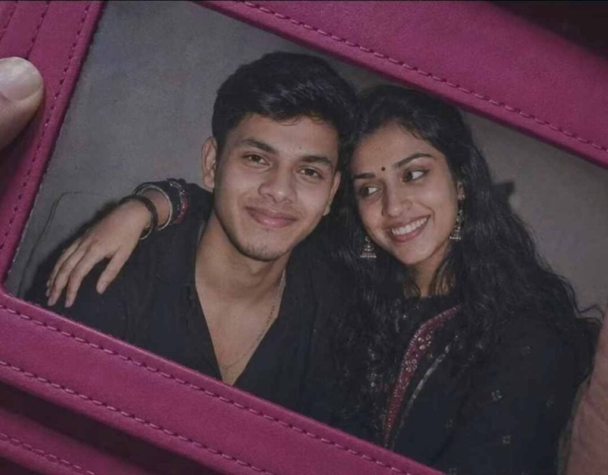

The Candid Couple Photo Editing Prompt 2026 is a great way to transform a normal couple photo into a beautiful, natural-looking candid portrait using AI photo editing. With a detailed prompt and a clear reference image, you can create a realistic couple photo with natural expressions, soft lighting, and an authentic candid feel. This type of AI photo editing is useful for creating romantic memories, social media posts, profile pictures, and creative couple portraits without changing the natural identity of the people in the original photo.
What Is a Candid Couple Photo Editing Prompt?
A Candid Couple Photo Editing Prompt is a detailed instruction that tells an AI image editor how to transform your uploaded photo into a specific couple photography style. The prompt can describe the pose, expressions, clothing, background, lighting, camera angle, and overall mood of the image. By using your original photo as a reference, you can guide the AI to create a more natural and realistic result. A well-written prompt also helps maintain the original facial features, skin tone, hairstyle, and overall appearance of the people in the reference image.
Best Prompt for Candid Couple AI Photo Editing
Prompt:
Want more awesome prompts?
Join our community and get the latest viral prompts daily.
Follow on Instagram
How to Create a Candid Couple Photo Using AI
Creating a candid couple photo with an AI editing prompt is simple if you have a suitable reference image. Start by choosing a clear photo where the faces are visible and not heavily covered by shadows or objects. Upload the image to an AI photo editing tool that supports image-based editing. Add the Candid Couple Photo Editing Prompt and generate the image. After the first result, check the faces, pose, hands, clothing, and background. If needed, make small changes to the prompt and generate another version until you get a natural-looking result.
Choose a Clear Couple Reference Photo
The quality of your reference photo can affect the final AI-generated image. Choose a high-resolution photo where both faces are clearly visible. Front-facing or slightly angled portraits generally provide useful details for maintaining facial appearance. Avoid images that are extremely dark, blurry, heavily filtered, or covered by objects. If you are using separate photos of two people, use clear images with similar lighting and camera angles when the editing tool supports multiple references. A good reference image gives the AI better visual information and can help produce a more natural final couple portrait.
Tips for Better Candid Couple AI Photos
For better results, use a clear reference image and provide specific instructions in your prompt. Describe the desired pose, camera angle, lighting, background, and photography style without adding unnecessary details. If the generated image changes something you want to keep, modify the prompt and clearly mention that the original feature should remain unchanged. Check the hands, fingers, facial expressions, clothing, and body proportions because these details can sometimes require additional adjustments. You can also try different backgrounds and lighting styles while keeping the main facial identity consistent.
Candid Couple Photo for Social Media
A realistic candid couple photo can be used for Instagram posts, Reels covers, profile images, WhatsApp Status, and other personal social media content. You can experiment with different compositions depending on where you want to use the image. A portrait-oriented image can work well for mobile platforms, while a wider composition may be suitable for thumbnails or other designs. Before posting, check the final image at full resolution and make sure the faces, hands, background, and overall composition look natural. You can also add simple text or design elements separately if needed.
Conclusion
The Candid Couple Photo Editing Prompt 2026 can help you create a realistic and beautiful couple portrait with a natural candid photography style. By using a clear reference image and a detailed AI prompt, you can experiment with different poses, lighting, backgrounds, and compositions while keeping the original appearance of the people as natural as possible. Start with the prompt provided above, review the generated result, and make small adjustments when required. I hope this guide helps you create your desired candid couple photo. If you face any problems while using the prompt, feel free to let me know in the comment box or Instagram handle.